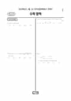

문제지


시험지를 먼저 풀어 보세요. 등급컷·표준점수·난이도는 흐리게 가려 뒀어요.
| 등급 | 원점수 | 표준점수 | 백분위 | 누적 |
|---|---|---|---|---|
| 1 | 79 | 137 | 96 | 4.59% |
| 2 | 67 | 127 | 89 | 11.33% |
| 3 | 55 | 117 | 77 | 23.71% |
| 4 | 41 | 105 | 60 | 41.01% |
| 5 | 23 | 90 | 40 | 60.58% |
| 6 | 13 | 81 | 23 | 78.25% |
| 7 | 8 | 77 | 12 | 89.5% |
| 8 | 2 | 73 | 3 | 97.4% |
등급별 컷 · 입시기관 3곳 원점수 추정 종합(이투스·종로학원·대성마이맥) · 공통+선택 점수 조합에 따라 다를 수 있음 · 만점 100점
| 등급 | 표준점수 이상 | 인원(명) | 비율 |
|---|---|---|---|
| 1 | 137 | 14,652 | 4.59% |
| 2 | 127 | 21,477 | 6.74% |
| 3 | 117 | 39,486 | 12.38% |
| 4 | 105 | 55,176 | 17.3% |
| 5 | 90 | 62,401 | 19.57% |
| 6 | 81 | 56,349 | 17.67% |
| 7 | 77 | 35,865 | 11.25% |
| 8 | 73 | 25,192 | 7.9% |
| 9 | 66 | 8,281 | 2.6% |
수학 영역 전체 응시자 기준이에요.
출처: 시·도교육청이 공개한 전국연합학력평가 성적 분석·통계자료(공개 자료 보기).
발행 기관: 시·도교육청(전국연합학력평가). 파일 위치: 이 사이트가 보관한 사본. 저작권은 발행 기관에 있습니다. 원본과 다르거나 게시 중단이 필요하면 연락처로 알려 주세요. 등급컷 출처 구분은 데이터 원칙에서 설명합니다.
막대 색은 역대 대비 난이도 · 진한 막대가 이 시험 · 막대를 누르면 그 회차로 이동
| 회차 | 1등급컷 | 표점 최고 | 1등급 표점 | 난이도 |
|---|---|---|---|---|
| 3월 학평2024년 고3이 시험 | 79 | 154 | 137 | 어려움 |
| 10월 학평2023년 고3 | 81 | 150 | 135 | 쉬움 |
| 7월 학평2023년 고3 | 77 | 157 | 136 | 어려움 |
| 4월 학평2023년 고3 | 73 | 162 | 136 | 어려움 |
| 3월 학평2023년 고3 | 77 | 159 | 138 | 어려움 |
| 10월 학평2022년 고3 | 78 | 154 | 136 | 보통 |
| 7월 학평2022년 고3 | 81 | 152 | 136 | 쉬움 |
| 4월 학평2022년 고3 | 75 | 160 | 138 | 매우 어려움 |
| 3월 학평2022년 고3 | 75 | 165 | 141 | 매우 어려움 |
| 10월 학평2021년 고3 | 75 | 163 | 140 | 매우 어려움 |